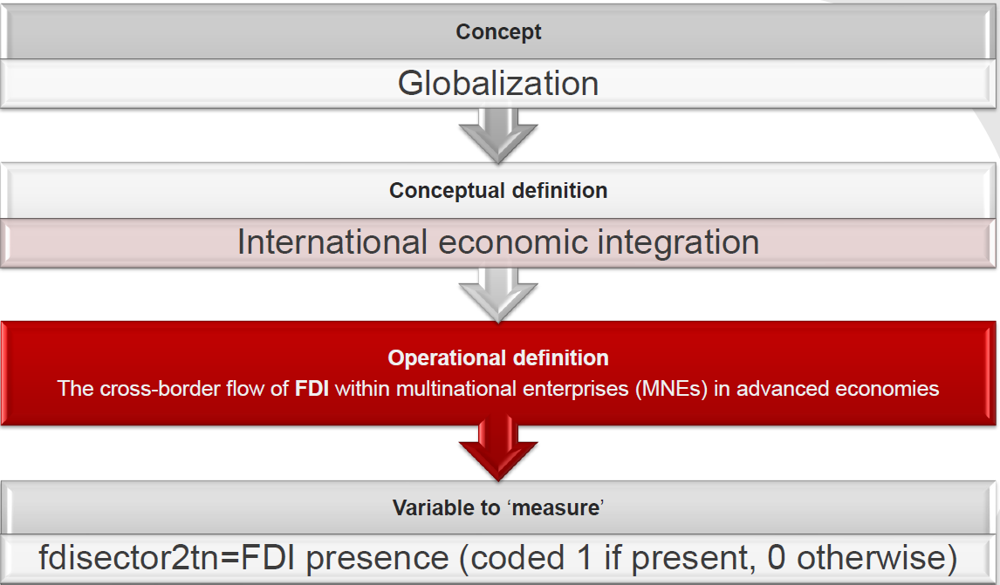

Conducted by
Md Mujahedul Islam
Some administrative and important information:
|

| Variation: | The cross-border flow of FDI (FDI flows clearly vary) | |
|
|
||
| Subject: | FDI flow within MNEs in advanced economices (it clearly says where the concept applies) | |
|
|
||
| Measurement: | Whether there were FDI flows or not (it suggests how they are going to measure) |
Nominal (Simply categorical data with no ranking or ordering )
Ordinal (Simply categorical data with ranking or ordering )
Interval (A measurement where the difference between two values is significant)
Discuss with a partner :-)
What is validity?
Discuss the following measures in terms of validity and reliability.
Propose a measurement for a person's political knowledge (think of a telephone survey).
Identify the level of measurement of the following variables:
You should have a questionnaire in your front (You can also download the file called fun_exercise_1_levelofmeasurement from Moodle.
Please answer it and fill the data in Excel (You will find the Excel format in moodle named fun_exercise_1_data_excel format).
Now send data that you just filled in Excel to my email: mujahed.asia@gmail.com
Now download data named ourdata.dta in stata format (.dta) from moodle which I have just converted from Excel to stata format.
Now please open ourdata.dta and familiarise ourselves with the data by trying to answer the following questions:
1) How many observations does the dataset contain? hint: count
2) How many variables does the dataset contain? hint: look above at the right-hand side of your opened STATA
3) How can you browse data so that you can see what is in it? hint: browse
1) What do the variables sex and continent measure? hint: codebook
2) What do the variables satis_study and feelings measure? hint: codebook
3) What do the variables age and height measure? hint: codebook/summerize/sum
4) What is the average age and height of your colleagues in this lab? hint: summerise/sum